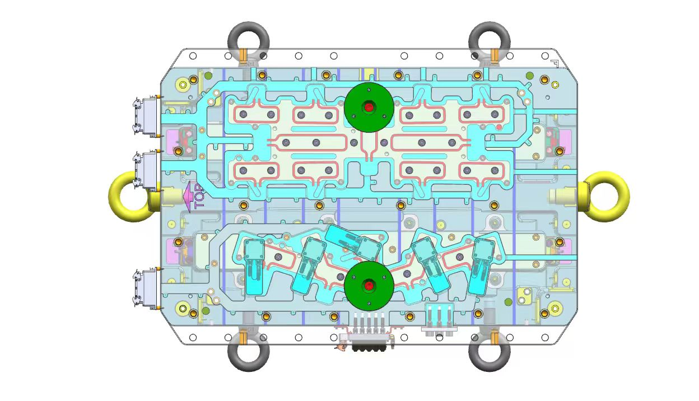
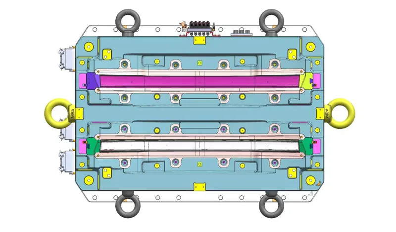
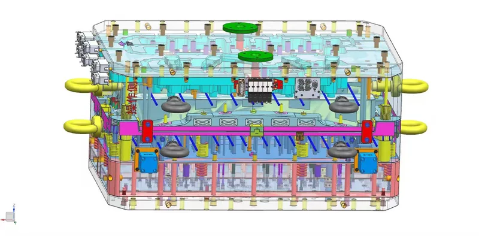

Case Study: Delivering an 8-Mold Lighting Program to a European Tier 1 Supplier
How Gege Mould managed the full export lifecycle — from engineering sign-off and PPAP documentation through customs clearance and on-site installation support — to deliver a complete multi-mold automotive lighting program on time and on specification.
The Challenge
A European Tier 1 automotive lighting supplier needed a complete tooling program for a next-generation running light assembly — combining two-color lens molds with precision housing tooling — across four part numbers. The program required 8 molds total, with cavity counts ranging from single-cavity for the larger housing components to 4-cavity for the smaller lens inserts.
The challenge was not purely technical. The customer had three constraints that made this an export-logistics puzzle as much as an engineering one:
Constraint 1 — Compressed Timeline. The customer's previous tooling supplier had fallen behind schedule by seven weeks before the program was pulled. Gege Mould was brought in mid-program with a fixed production start date at the customer's European facility that could not move. Total available lead time from PO to delivery at the customer's dock: 16 weeks for 8 molds.
Constraint 2 — Split Shipping with Staggered PPAP. The four lens molds (higher cavitation, longer tryout) needed to ship first to meet the customer's initial production qualification window. The four housing molds would follow four weeks later. Each batch required its own complete PPAP documentation package, its own customs clearance, and its own installation support visit — effectively two parallel export programs compressed into one.
Constraint 3 — On-Site Tryout Coordination. The customer required a Gege Mould engineer on-site at their European facility for the first T1 sampling of every mold — not just remote support. That meant coordinating travel visas, equipment access, and technical handover across an 8-hour time zone difference, twice.
Our Approach
Engineering & Production: Parallel Workstreams From Day One
Rather than sequencing design → machining → tryout → shipment linearly across all 8 molds, our engineering team split the program into two parallel streams on day one. The lens mold stream (4 molds, higher cavitation, two-color rotary tooling) ran on an accelerated track with dedicated CNC and EDM capacity reserved. The housing mold stream (4 molds, larger format, single-cavity) ran on a parallel track offset by two weeks — close enough that engineering learnings from the lens molds could feed into the housing builds, but separate enough that no resource contention slowed either stream.
From the export management side, I established a single point of contact for the customer — myself — handling all communication across engineering, quality, logistics, and commercial topics. The customer's purchasing manager, quality engineer, and production planner all routed through one channel, eliminating the miscommunication that often occurs when different departments talk to different people on our side.
Documentation: PPAP Built As We Went, Not Assembled at the End
On too many export programs, documentation becomes a last-minute scramble. I made the decision early to build the PPAP Level 3 package incrementally — dimensional reports drafted at T1 sampling, PFMEA and control plans reviewed and translated during the tryout phase, material certifications collected from our steel and resin suppliers at the point of order rather than at the point of shipment. By the time each batch of molds was ready to crate, its documentation package was already complete, reviewed, and formatted to the customer's submission template.



Logistics: Door-to-Door, Not Port-to-Port
For international mold shipments, the most common failure point is the handoff between the freight forwarder and the customer's receiving team — molds arrive at the destination port, customs clearance takes longer than expected, the customer's nominated trucking company isn't available, and suddenly a mold that left Taizhou on schedule is sitting in a warehouse in Rotterdam for nine days while the customer's production deadline approaches.
We managed this program CIF door-to-door, not port-to-port. I booked the full logistics chain — factory crating → Shanghai port → ocean freight → European port of entry → customs brokerage → inland trucking → customer's factory dock — as a single managed movement with one freight partner. The customer received a tracking update every 48 hours with the current location, the next milestone, and the estimated arrival at their dock. No surprises, no missing handoffs, no warehouse gaps.
On-Site Support: The Export Manager Was There
For both shipment batches, I traveled with our senior mold trial engineer to the customer's facility. My role on-site was not technical — the engineer handled the mold installation, first-shot sampling, and process parameter documentation. My role was to be the person the customer could look in the eye and ask: "Is batch two on schedule? Are the housing molds through tryout? What's the vessel departure date?"
When an export manager is physically present at the customer's facility during installation, it sends a signal that this program matters to our entire organization — not just to the engineering department. It also means any commercial or logistical question gets an immediate answer, not a 24-hour email delay across time zones.
The Outcome
All 8 molds were delivered, installed, and producing qualified parts within the customer's production timeline. The first batch (4 lens molds) arrived at the customer's dock in week 13 of the 16-week window. The second batch (4 housing molds) arrived in week 15. Both batches passed first-article inspection with zero dimensional non-conformances requiring tool modification.
What This Program Taught Us
Every export program teaches you something. This one reinforced three lessons I carry into every project I manage:
- Documentation is not a postscript — it is a parallel workstream. Building the PPAP package alongside the mold build, not after it, removes the single biggest source of last-minute delay in international mold programs. It requires discipline but it pays for itself in schedule certainty.
- Door-to-door logistics management is not a premium service — it is the baseline. The cost difference between CIF port-to-port and CIF door-to-door on a multi-mold program is marginal. The schedule risk reduction is enormous. I will never ship a production mold program port-to-port again unless the customer explicitly requires it.
- Being on-site matters. The export manager standing in the customer's facility during installation is worth more than a hundred emails. It turns a supplier relationship into a partnership — and in this industry, partnerships get the next program. This customer has now ordered three additional programs from Gege Mould, and I believe the on-site presence during that first delivery was a significant factor in that decision.
About this case study: This case study is based on a real export program managed by Gege Mould for a European Tier 1 automotive lighting supplier. The program scope, approach, and outcomes described reflect actual project experience. Specific customer and part details have been generalized where necessary to respect client confidentiality.
Have an Export Program to Discuss?
If you're sourcing injection molds internationally and want a partner who manages the full export lifecycle — not just the tool build — contact our team for a program review.
Start Your RFQ